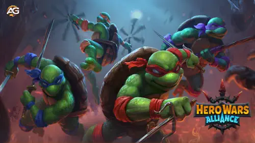

A Força Central das Tartarugas Ninja
As Tartarugas Ninja fazem parte da facção Natureza, trazendo controle de multidões único, dano e sobrevivência para qualquer equipe. Sua habilidade de mergulhar nas linhas inimigas e causar dano em área (AoE) as torna um componente essencial em estratégias agressivas. Para aproveitar todo o seu potencial, é vital combiná-las com heróis que amplifiquem suas forças ou mitiguem suas fraquezas.

Melhores Composições de Equipe para as Tartarugas Ninja 🐢🍕
-
Octavia, Morrigan, Dante, Tartarugas Ninja, Corvus
Essa equipe equilibra ataque e defesa. Morrigan fornece cura e proteção, especialmente útil para proteger as Tartarugas Ninja. Dante entrega dano baseado em esquiva, enquanto Corvus garante resistência e adiciona um Altar que penaliza inimigos que atacam em grupos com dano puro. Os buffs de esquiva de Dante com Octavia enfraquecem ainda mais os inimigos, aumentando a sobrevivência e o dano da equipe.
-
Octavia, Astrid, Dante, Tartarugas Ninja, Corvus
Aqui, Astrid e Lucas trazem dano físico adicional e suporte, complementando os ataques AoE das Tartarugas Ninja. Essa configuração brilha em batalhas que exigem pressão contínua contra vários inimigos.
-
Jet, Tempus, Dante, Tartarugas Ninja, Corvus
Essa equipe utiliza Tempus para reduzir a velocidade dos inimigos e prolongar a duração de debuffs. Jet fornece buffs de golpes críticos, enquanto Dante e Corvus causam dano consistente. A sinergia entre Tempus e Corvus amplifica as penalidades, permitindo que as Tartarugas Ninja dominem o campo de batalha.
-
Octavia, Soleil, Nebula, Dante, Tartarugas Ninja
A habilidade Halo de Soleil oferece oito segundos de redução de dano e imunidade a status para heróis da linha de frente e nesse time as Tartarugas são os herois mais a frente, refletindo efeitos como atordoamento, cegueira e silêncio de volta aos inimigos. Nebula aumenta o dano da equipe, enquanto Dante e Octavia adicionam versatilidade e controle.
-
Jet, Sebastian, Tartarugas Ninja, Tristan, Luther
Essa composição foca em alto dano explosivo e golpes críticos. Sebastian aumenta a chance de críticos, enquanto Luther mergulha na retaguarda inimiga, desorganizando sua formação. As Tartarugas Ninja se destacam nesse caos, capitalizando nos inimigos desorientados.
Estratégias Avançadas para Equipes de Tartarugas Ninja no Hero Wars
Aproveitando Tempus e a Manipulação do Tempo
Tempus é excelente para controlar o campo de batalha, diminuindo a velocidade dos inimigos enquanto prolonga as penalidades aplicadas por aliados como Corvus e Dante. Junto com os ataques rápidos das Tartarugas Ninja, essa manipulação do tempo permite um dano devastador nos momentos cruciais da luta.
O Papel de Jet nas Equipes de Tartarugas Ninja
A sinergia de Jet com as Tartarugas Ninja reside em sua habilidade de melhorar os golpes críticos. Embora ele não consiga buffá-las imediatamente devido ao início subterrâneo, seu impacto geral cresce conforme a batalha avança. Combinar Jet com Dante e Corvus maximiza o potencial ofensivo da equipe.
Sinergia de Natureza entre Dark Star e Alvanor
A habilidade de marcação de inimigos de Dark Star amplifica o dano causado por heróis da facção Natureza, como as Tartarugas Ninja. Alvanor, como suporte da facção Natureza, duplica os efeitos de cura e reduz o dano recebido, aumentando significativamente a sobrevivência. Juntos, criam uma sinergia de Natureza formidável.
Equipes Especializadas de Tartarugas Ninja para Cenários Específicos
-
Dark Star, Alvanor, Tartarugas Ninja, Oya, Aurora
Essa equipe totalmente da facção Natureza otimiza cura, armadura e poder ofensivo. Aurora fornece dano mágico e capacidades de esquiva, enquanto o artefato de Oya aumenta as chances de golpes críticos, criando uma combinação devastadora tanto para PvE quanto PvP.
-
Fafnir, Yasmine, Tartarugas Ninja, Oya, Tristan
O escudo de Fafnir protege heróis de agilidade como Yasmine e as Tartarugas Ninja, favorecendo inicialmente Yasmine devido ao atraso subterrâneo das Tartarugas Ninja. Essa composição foca na sobrevivência da linha de frente enquanto entrega altos danos explosivos por meio de Yasmine e Oya.
-
Jet, Dark Star, Tartarugas Ninja, Oya, Chabba
Essa equipe híbrida se beneficia da amplificação de dano de Dark Star e das capacidades de tanque de Chabba. Jet e Oya aumentam o dano crítico, criando uma configuração equilibrada para batalhas prolongadas.
Por Que as Tartarugas Ninja Se Destacam no Hero Wars
- Estilo de Jogo Único: Sua fase subterrânea oferece flexibilidade tática, tornando-as imprevisíveis.
- Potencial de Sinergia: Combinam bem com heróis como Corvus, Jet e Alvanor para estratégias diversificadas.
- Alto Potencial de Dano: Suas habilidades de dano em área (AoE) podem mudar o rumo das batalhas, especialmente no PvP.
- Bônus de Facção: Como heróis da facção Natureza, beneficiam-se significativamente de composições focadas em Natureza.
Perguntas Frequentes
- Qual é o melhor herói de suporte para as Tartarugas Ninja? Alvanor é um dos melhores suportes, duplicando a cura e melhorando a sobrevivência em composições de Natureza.
- As Tartarugas Ninja funcionam em equipes fora da facção Natureza? Sim, podem ser combinadas com heróis como Dante e Jet para capitalizar na esquiva e no dano crítico.
- Jet é obrigatório nas equipes de Tartarugas Ninja? Embora não seja obrigatório, Jet aumenta significativamente o potencial de golpes críticos, tornando-se uma forte adição.
- Como as Tartarugas Ninja enfrentam alvos de alta prioridade? Com a marcação de inimigos de Dark Star, elas causam 40% mais dano aos alvos marcados, ideal para neutralizar ameaças.
- Quais artefatos são cruciais para as equipes de Tartarugas Ninja? Artefatos que aumentam a penetração de armadura e o dano crítico são os melhores para aprimorar suas capacidades ofensivas.
- As Tartarugas Ninja podem sobreviver sem um tanque dedicado? Sim, quando combinadas com heróis como Dante, Soleil ou Tristan, elas podem prosperar sem um tanque tradicional.
Conclusão
As Tartarugas Ninja oferecem uma versatilidade incomparável no Hero Wars Alliance. Aproveitando suas habilidades únicas e combinando-as com heróis sinérgicos, você pode criar equipes que se destacam tanto no ataque quanto na defesa. Experimentar essas composições ajudará a desbloquear todo o seu potencial, garantindo seu sucesso em batalhas em todos os modos de jogo.
 Sinergia das Tartarugas Ninja - Hero Wars
Sinergia das Tartarugas Ninja - Hero Wars Tartarugas Ninja Hero Wars Alliance
Tartarugas Ninja Hero Wars Alliance